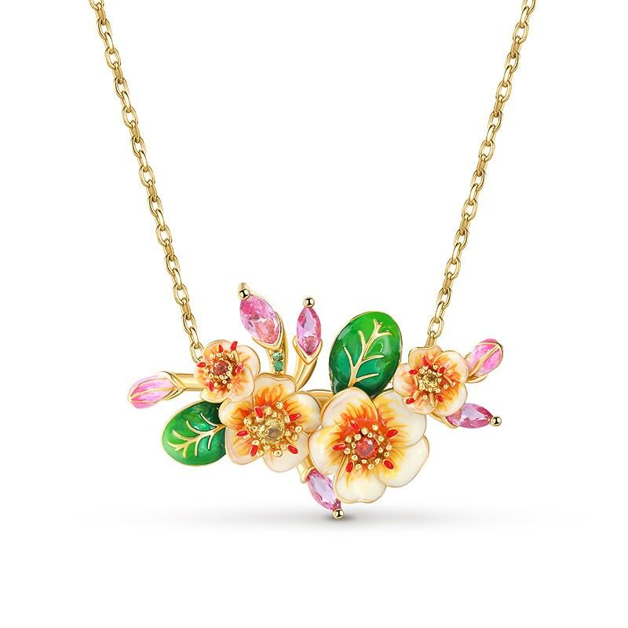
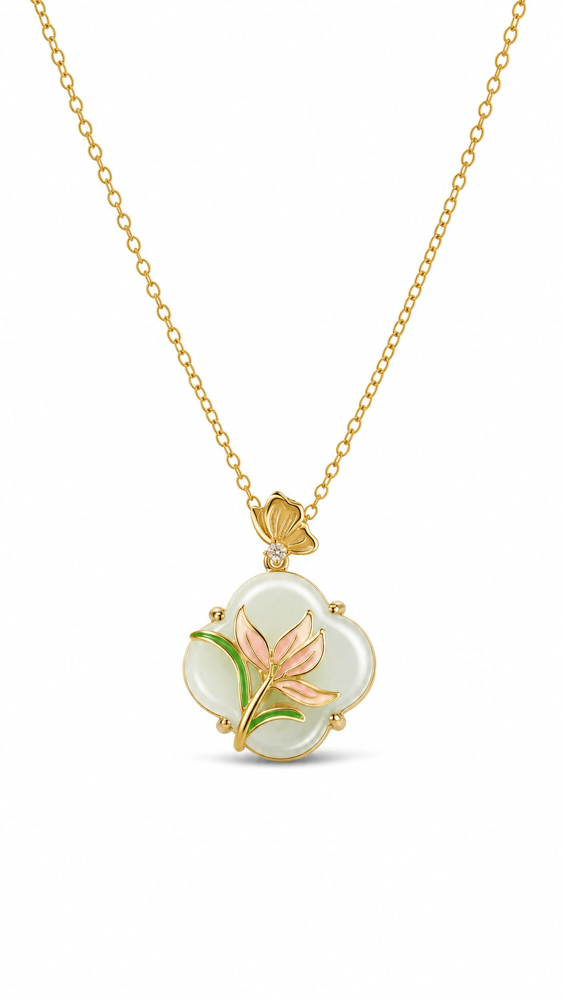
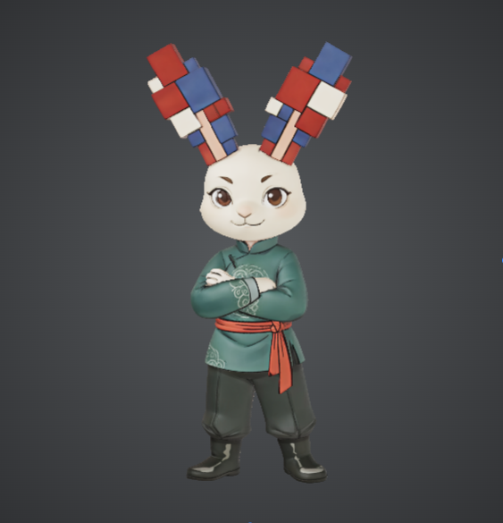
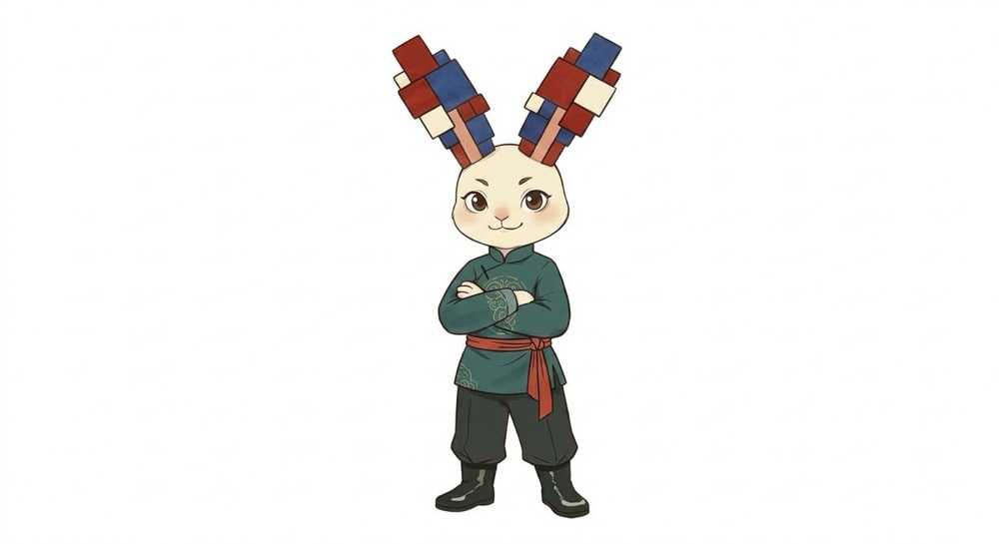

以佩戴連接創意，在方格中尋找格局
專注於原創服裝飾品設計，結合東方美學與現代幾何工藝
「『佩』戴創意，連接世界：以別針與掛扣的靈活性，打破傳統邊界。
『格』物致知，方寸格局：以方塊構架思維，在秩序中尋找無限可能。」
原創飾品展示

原創飾品系列 I

原創飾品系列 II

原創飾品系列 III
關於品牌
品牌命意與名稱拆解
【佩】
源自“佩戴”、“玉佩”與“別針”。代表著裝飾、連接與表達。在設計中化為連接創意與現實的“別針”與“掛扣”概念，賦予獨特的飾品感與識別度。
【格】
源自“格物致知”、“方塊（格子）”與“田字格”。代表著框架、品格與格局。在形象中化為模組化方塊，象徵嚴謹的秩序、思維的構建與無限的創作空間。
品牌視覺概念
結合別針與中國古代掛扣概念，透過灰色別針與多個方格疊加，呈現類似可佩戴頭飾的造型。
品牌定位：服裝飾品設計
品牌吉祥物：萍格


動物：兔子 ｜ 名字：萍格 ｜ 定義：品牌吉祥物
1. 品牌核心作用
能夠第一時間展現品牌的風格和特性，給顧客好的第一印象。
性格設定：自信，敢於挑戰，不怕困難。
2. 「方塊積木」立體耳朵——格物之姿
視覺結構：打破傳統靈動柔韌的兔耳形態，完全由模組化的三維方塊重構疊加而成。這一靈感直接承襲自品牌 ICON 的“方格疊加/田字格”概念，象徵著探索事物本源（格物致知）的理性和空間構架能力。
色彩搭配：耳朵採用紅、藍、白的經典配色撞色組合，展現時尚潮玩（Urban Art Toy）的高級質感與未來科技感。
3. 新中式極簡服裝——品格之韻
服飾造型：身著改良式深青色國風立領暗紋連衫，搭配朱紅綢帶腰封。將傳統中式服飾的內斂優雅與當代時尚審美相結合，體現出東方美學的當代新生。
精緻暗紋：胸前與袖口的雲紋水波暗繡，寓意創意如水流般不絕，底蘊深厚。
4. 擬人化神態與姿勢——自信之態
神情姿態：雙臂自信交疊（雙手環抱），眼神堅定溫和、嘴角微揚。展現出從容不迫、胸有成竹的獨特氣場。
年輕形態：整體比例設定偏向年輕少年感，幹練不失親和力，代表著不斷探索、朝氣蓬勃的創作生命力。
社群與企劃宣發
—— 《我與地壇》新中式光影閱讀企劃
查看完整貼文